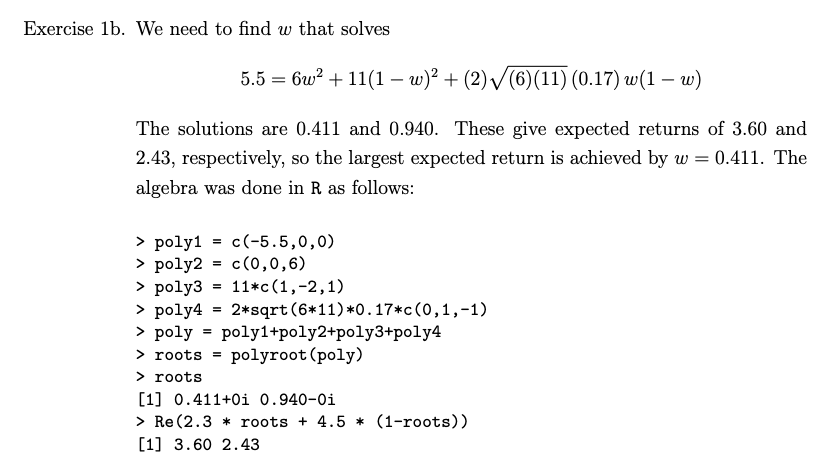

Chapter 11 Problem Set 4
11.1 Q1
Suppose that there are two risky assets, A and B, with expected returns equal to 2.3% and 4.5%, respectively. Suppose that the standard deviations of the returns are \(\sqrt{ 6 }\%\) and \(\sqrt{ 11 }\%\) and that the returns on the assets have a correlation of 0.17.
11.1.1 Part A
\[ \begin{aligned} \mathbb{E}(wA+ (1-w)B) &= 0.03\\ &= w\mathbb{E}(A) + (1-w)\mathbb{E}(B)\\ &= w\cdot .023 + (1-w)\cdot.045\\ 0.03 &= w(.023-.045) + .045\\ w &= \frac{.03-.045}{.023-.045}\\ w &= 0.6818 \end{aligned} \]
A portfolio made up of \(68\%\) of asset A and \(32\%\) of asset B will achieve a \(3\%\) rate of expected return.
11.1.2 Part B
\[ \begin{aligned} \sqrt{ 5.5 }\% &= \sqrt{ Var(wA + (1-w)B) }\\ &= \sqrt{ w^{2}Var(A) + (1-w)^{2}Var(B) + 2w(1-w)Cov(A,B) }\\ &= w\sqrt{0.06 }+(1-w)\sqrt{ 0.11 } + 2w(1-w)0.17\cdot \sqrt{ 0.06}\cdot \sqrt{0.11}\\ &= \sqrt{ 0.11 } + w(\sqrt{ 0.06 }-\sqrt{ 0.11 }+0.0276) -0.02762w^{2}\\ \sqrt{ 0.055 } - \sqrt{ 0.11 } &= w(-0.0591) - 0.02762w^{2}\\ 0 &= - 0.02762w^{2} -0.3907w + 0.0971\\ w &= [0.2443, -14.3898] \end{aligned} \]
We should invest in a portfolio made up of 24.43% asset A, and 75.67% asset B to achieve a \(\sqrt{ 5.5 }\%\) standard deviation of return.
I’m wrong.

Theres more from the textbook i will skip for now
11.3 Part A
Suppose that stock A shares sell at $75 and stock B shares at $115. A portfolio has 300 shares of stock A and 100 of stock B. What are the weights w and 1−w of stocks A and B in this portfolio?
\[ \begin{aligned} w &= \frac{75\cdot 300}{75\cdot 300 + 115 \cdot 100} = 0.66176\\ \\ 1-w &= 0.33824 \end{aligned} \]
11.3.1 Part B
More generally, if a portfolio has \(N\) stocks, if the price per share of the \(j\)th stock is \(P_j\), and if the portfolio has \(n_j\) shares of stock \(j\), then find a formula for \(w_j\) as a function of \(n_{1},\dots,n_{N}\) and \(P_{1},\dots,P_{N}\).
\[ \begin{aligned} w_{j} = \frac{n_{j}\cdot P_{j}}{\sum^{N}_{i=1}n_{i}P_{i}} \end{aligned} \]
11.4 Q3
Let \(R_{P}\) be a return of some type on a portfolio and let \(R_{1},\dots, R_{N}\) be the same type of returns on the assets in this portfolio. Is \(R_P = w_{1}R_{1}+ \dots + w_{N}R_{N}\) true if \(R_{P}\) is a net return? Is this equation true if \(R_{P}\) is a gross return? Is it true if \(R_{P}\) is a log return? Justify your answers.
\[ \begin{aligned} \text{Gross Returns:}&\\ R'(t) &= \frac{S(t)}{S(t-1)}\\ \text{Net Returns:}&\\ R(t) &= R'(t)-1 = \frac{S(t)-S(t-1)}{S(t-1)}\\ \text{Log Returns:}&\\ r(t) &= \log(R'(t)) = \log\{S(t)\}-\log\{S(t-1)\}\\ \end{aligned} \]
We have shown in class that this equation holds for net returns. For gross returns: \[ \begin{aligned} R'(t) = R(t)+1 &= w_{1}R_{1}(t) + \dots + w_{N}R_{N}(t) + 1\\ &= w_{1}R_{1}(t) + \dots + w_{N}R_{N}(t) + (w_{1}+\dots+w_{N})\\ &= w_{1}(R_{1}(t)+1) + \dots + w_{N}(R_{N}(t)+1)\\ &= w_{1}R'_{1}(t) + \dots + w_{N}R'_{N}(t) \end{aligned} \]
So it holds for gross returns as well.
\[ \begin{aligned} r(t) &= \log(R'(t)) = \log(w_{1}R'_{1}(t) + \dots + w_{N}R'_{N}(t))\\ &= \log(w_{1}R'_{1}(t)) \times \dots \times \log(w_{N}R'_{N}(t))\\ &= [\log(w_{1}) + \log(R'_{1}(t))] \times \dots \times [\log(w_{N}) + \log(R'_{N}(t))]\\ &= [\log(w_{1}) + r_{1}(t)] \times \dots \times [\log(w_{N}) + \log(r_{N}(t))]\\ &\ne w_{1}r_{1}(t) + \dots + w_{N}R_{N}(t) \end{aligned} \]
So it does not hold for log returns.